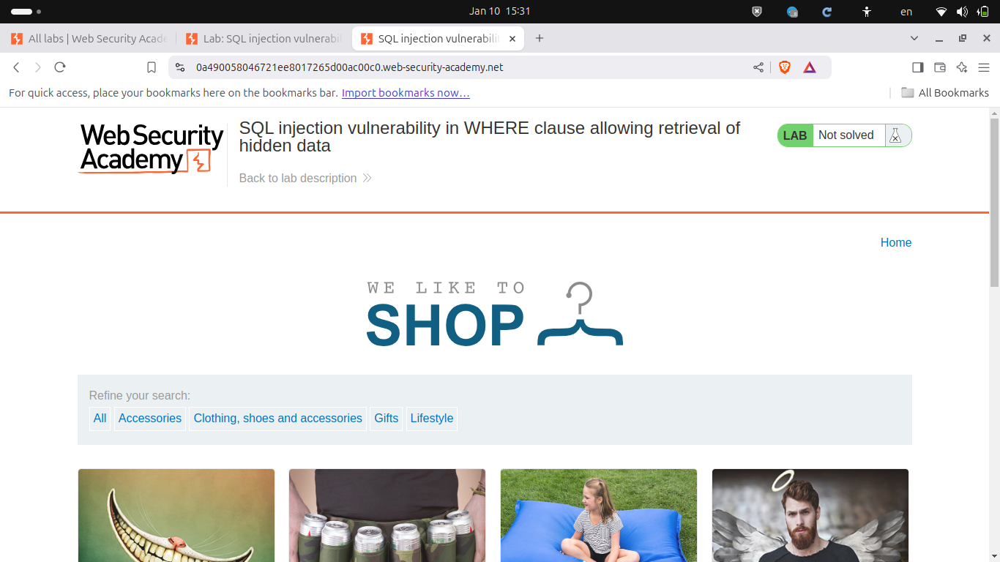
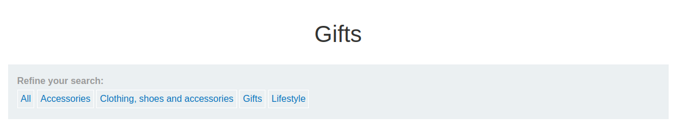
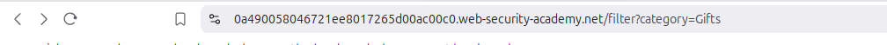
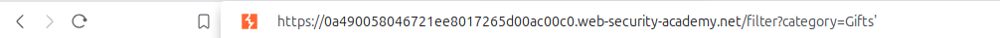
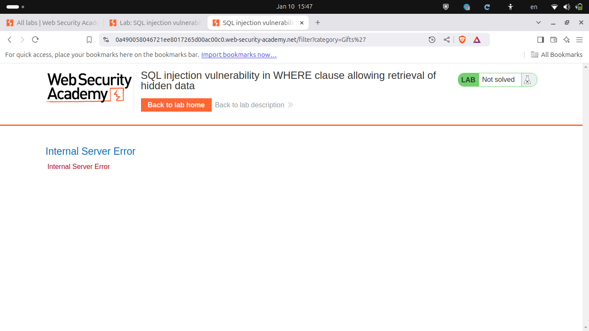
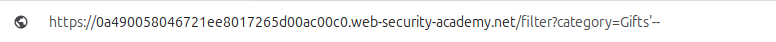
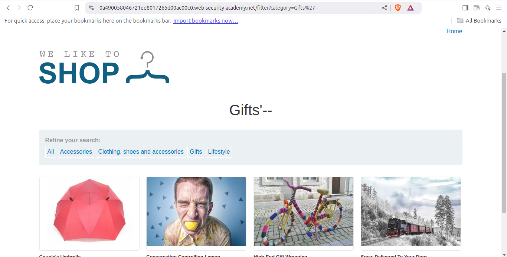

در این آزمایشگاه، ما شروع به تمرین با حل آسیبپذیریهای مختلف در محیط ارائهشده خواهیم کرد.
تمرین برای درک نحوه تست آسیبپذیریها در سناریوهای واقعی ضروری است.
این آزمایشگاه توسط Port Swigger ارائه شده است و برای هر کسی که میخواهد تمرین کند در دسترس است.
برای آزمایشگاه اول، میتوانید با مراجعه به اینجا به آن دسترسی پیدا کنید.
توجه داشته باشید که ممکن است بارگذاری سایت کمی زمان ببرد، پس اگر بلافاصله به نظر رسید که کار نمیکند نگران نباشید.
سعی کنید چالشها را به تنهایی حل کنید. با این حال، اگر گیر کردید، مراحل زیر را دنبال کنید تا به راهحل برسید. مطمئن شوید که فرایند را درک کنید و بدانید چرا چیزها به این شکل عمل میکنند.
هنگام بازدید از آزمایشگاه، این پیغام را خواهید دید:
این آزمایشگاه شامل یک آسیبپذیری SQL injection در فیلتر دستهبندی محصولات است. هنگامی که کاربر یک دسته را انتخاب میکند، برنامه یک درخواست SQL مانند زیر اجرا میکند:SELECT * FROM products WHERE category = 'Gifts' AND released = 1آنها قبلاً نکاتی درباره محل مشکل دادهاند، اما در دنیای واقعی، شما باید آسیبپذیریها را خودتان پیدا کنید، یا میتوانید از اسکنر آسیبپذیری مانند Burp Suite استفاده کنید.
با این حال، زیاد به اسکنرها تکیه نکنید چون گاهی اوقات اطلاعات نادرستی ارائه میدهند. بهتر است خودتان آسیبپذیریها را کشف کنید.
در این مورد، آسیبپذیری در فیلتر دستهبندی محصولات قرار دارد. برای حل آزمایشگاه، باید یک حمله SQL injection انجام دهید که محصولات منتشر نشده را نشان دهد.
اول، در آزمایشگاه ثبتنام کنید یا وارد شوید. پس از ورود، روی دکمه نارنجی با برچسب "ACCESS THE LAB" کلیک کنید تا وارد آزمایشگاه شوید.
پس از دسترسی به آزمایشگاه، شما باید صفحهای مشابه این را ببینید:
به نظر میرسد یک صفحه عادی باشد و در واقع همینطور است! با این حال، مشکلی وجود دارد که باید شناسایی کنیم.
برای شناسایی آسیبپذیری، باید سعی کنید با تمام چیزهایی که در صفحه میبینید تعامل کنید.
در حین تست، شما جستجو کردید و این را یافتید:
در این نقطه، متوجه میشوید که این URL ممکن است به SQL injection آسیبپذیر باشد چون به ما اجازه میدهد آزمایش کنیم که آیا آسیبپذیر است یا نه:
 https://0a490058046721ee8017265d00ac00c0.web-security-academy.net/filter?category=Gifts برای بررسی اینکه آیا آسیبپذیر است یا نه، یک کوتیشنتکی ' در انتهای URL اضافه کنید، مانند این:
وقتی این کار را میکنید، وبسایت کوتیشنتکی را با 27% جایگزین میکند. این رفتار عادی است اگر شما با HTML و JavaScript آشنا باشید. بیشتر در این مورد بعداً بحث خواهیم کرد.
اضافه کردن کوتیشنتکی به URL باعث میشود سرور یک خطای داخلی را برگرداند:
برای درک آنچه که اتفاق افتاده است، بیایید به درخواست SQL پشت برنامه نگاه کنیم.
وبسایت سعی دارد تمام محصولات از دسته "Gifts" را نمایش دهد.
بر اساس این، میتوانیم استنباط کنیم که درخواست SQL ممکن است به این شکل باشد:
SELECT * FROM products WHERE category = 'Gifts' با این حال، وبسایت فقط محصولات منتشر شده را نشان میدهد، بنابراین درخواست SQL احتمالاً چیزی شبیه این است:
SELECT * FROM products WHERE category = 'Gifts' AND released = 1 SQL Query:
SELECT * FROM products WHERE category = 'Gifts' AND released = 1;SELECT * SELECT یک دستور SQL است که برای بازیابی دادهها از پایگاه داده استفاده میشود. ستاره * یک نماد است که به معنای "انتخاب همه ستونها" است و به پایگاه داده دستور میدهد تمام اطلاعات موجود را برای هر ردیفی که شرایط آن را برآورده میکند بازگرداند.
FROM productsFROM جدولی را که باید دادهها از آن بازیابی شوند مشخص میکند. در این مورد، products جدولی است که اطلاعات محصول، مانند نامها، قیمتها، دستهها و وضعیت انتشار را در خود دارد.
WHEREWHERE برای فیلتر کردن دادهها بر اساس شرایط خاص استفاده میشود. این دستور، ردیفهایی که شرایط داده شده را برآورده میکنند محدود میکند.
category = 'Gifts'این شرط ردیفها را فیلتر میکند تا فقط محصولاتی که ستون category آنها برابر با 'Gifts' است نمایش داده شوند. فقط محصولات دستهبندی شده به عنوان "هدایا" انتخاب خواهند شد.
ANDAND یک عملگر منطقی است که برای ترکیب چندین شرط استفاده میشود. برای اینکه یک ردیف در نتیجه گنجانده شود، باید هر دو شرط درست باشند. در این مورد، دستهبندی باید "هدایا" باشد و محصول نیز باید به عنوان منتشر شده علامتگذاری شده باشد.
released = 1این شرط محصولات را فیلتر میکند تا فقط آنهایی را نمایش دهد که ستون released آنها برابر با 1 باشد، به این معنی که محصول منتشر شده است. در برخی پایگاههای داده، 1 نمایانگر وضعیت درست یا فعال است، در حالی که 0 نمایانگر وضعیت غلط یا غیرفعال است.
زمانی که کوتیشنتکی را به URL اضافه کردیم، درخواست به این شکل در آمد:
SELECT * FROM products WHERE category = 'Gifts'' AND released = 1 در نتیجه، درخواست شکست خورد چون یک کوتیشنتکی بدون بسته شدن باقی ماند که باعث ایجاد یک خطای نحوی در SQL شد.
حالا، بیایید سعی کنیم بعد از کوتیشنتکی یک کامنت اضافه کنیم:
حالا هیچ خطایی وجود ندارد:
درخواست اکنون به این شکل است:
SELECT * FROM products WHERE category = 'Gifts'--' AND released = 1 با قرار دادن کامنت (--) در اینجا، تمام چیزی که بعد از آن میآید از نظر SQL نادیده گرفته میشود، به طور مؤثر بخش دوم درخواست که محصولات منتشر شده را فیلتر میکرد حذف میشود.
از این، میتوانیم نتیجه بگیریم که این URL به SQL injection (SQLi) آسیبپذیر است.برای تکمیل آزمایشگاه، URL را با این payload تغییر خواهیم داد:
' or 1=1--با انجام این کار، آزمایشگاه حل خواهد شد، اما بیایید بفهمیم چرا این کار میکند.
زمانی که این payload را اضافه میکنیم، درخواست به این شکل در میآید:
SELECT * FROM products WHERE category = 'Gifts' or 1=1--' AND released = 1در اینجا، ما میگوییم که میخواهیم محصولاتی را نمایش دهیم که دستهبندی آنها "هدایا" است و شرط "1=1" همیشه درست است. در نتیجه، تمام محصولات نمایش داده خواهند شد زیرا درخواست دیگر شرط "AND released = 1" را در نظر نمیگیرد.
بیایید نتایج را مقایسه کنیم:
قبل از SQLi:اگر در مورد تفاوت بین "OR" و "AND" گیج شدهاید، در اینجا یک توضیح سریع:
با "OR"، شرط درست است اگر حداقل یکی از شرایط معتبر باشد. اگر دو شرط داده شده باشد، برنامه زمانی که هر کدام درست باشد اجرا خواهد شد.
با "AND"، برنامه تنها زمانی اجرا میشود که هر دو شرط درست باشند. اگر حتی یکی از شرایط غلط باشد، برنامه اجرا نخواهد شد.
برای دریافت جدیدترین اخبار و منابع، به من در تلگرام بپیوندید! به تلگرام بپیوندید
بعدی: SQLi | آزمایشگاه - 2